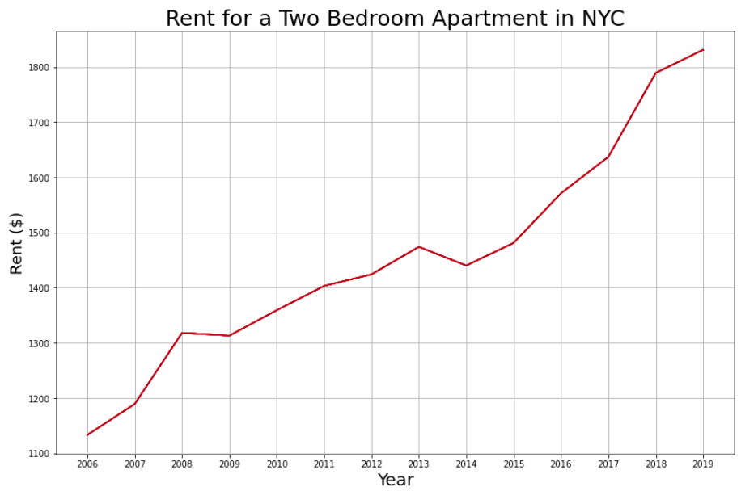
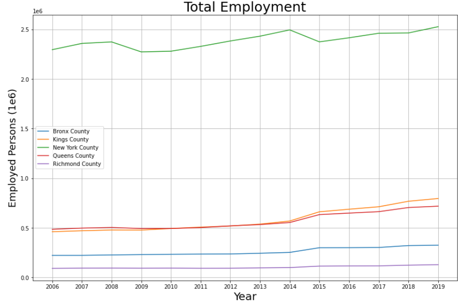

A Study of Gentrification
Introduction
Gentrification is a phenomenon in which the rising price of housing displaces indigenous communities.
Put shortly, this results in segregation. As the price of housing rises, wealthy people from privileged backgrounds are given exclusive access to desirable neighborhoods, increasing demand for housing while lowering supply. Disadvantaged people are then dislocated and forced to move to less desirable and more affordable areas that aren’t as ripe with economic opportunity. This causes feedback loops in which crime increases and businesses close, dooming people to live in these areas that are colloquially identified as ghettos.
Background
The purpose of this study is to observe the variability in the price of housing, as well as other data fields that may be potential factors or externalities. The independent analyses will be done as functions of time so that anomalies may be identified and contextualized by historical occurrences. Comparisons will then be done accordingly.
- Queens County, the borough of Queens
- Bronx County, the borough of The Bronx
- Kings County, also known as the Borough of Brooklyn
- New York County, also known as the Borough of Manhattan
- Richmond County, also known as the Borough of Staten Island
- General Rent Data
- House Price Data
- Race / Ethnic Data
- Crime Data
- Salary Data
- Employment Data
Contextualizing The Data
The time period studied will be the years 2006 through 2019, the datasets each span different periods of time and this range is one they each have in common, with exception to Manhattan’s Housing Price Index (HPI) data from the years 2016 onwards. For reasons later described, this will not have an effect on the study.
The Financial Crisis and Hurricane Sandy are two significant phenomena that can justify the anomalous behavior that takes place in 2008 and 2013 respectively. If the scope were to be expanded, it would be reasonable to expect the Tech Bubble and the 9/11 terrorist attack to also have significant and visible impacts on the data.
The Covid-19 pandemic, and government reaction to it, has had immense influence on the any available data and has rendered it mostly useless for this analysis. Therefore, data collected after 2019 will be discarded or dismissed. There are however, interesting observations that can be made studying the impact of an absolute welfare state on life in New York City.
Inflation is a significant factor that makes it very difficult to make immediate comparisons, therefore it is critical to frame the data and analysis in a manner such that inflation distorts the information minimally. This means that comparisons between datasets should only be made within that same year, and overarching conclusions should only be made after financial data is normalized in respect to inflation.
Relative Population is another important factor that distorts data that is presented in a manner that portrays total occurrences. Therefore it is important to convert that data so that it is quantified per capita when making direct comparisons. Staten Island’s population is approximately a third of the size of the next least populated county, suggesting comparisons will be difficult to make and possibly inconclusive.
- New York County: 1,694,251
- Richmond County: 495,747
- Queens County: 2,405,464
- Bronx County: 1,472,654
- Kings County: 2,736,074
Initial Analysis and Visualizations
Total Amount of Jobs per Borough
Initial Observations
Staten Island seems to be incredibly anomalous, featuring both lower earnings and lower crime. This radical difference can most likely be attributed to the difference in population size. One may wonder if this data is more comparable to that of New Jersey’s counties rather than other boroughs in New York City. Due to this stark difference in data, Richmond County will be excluded from further analysis.
Manhattan is interesting in that it is home to the highest earning New Yorkers, has the most expensive housing, and employs the most people despite ranking third among the counties in terms of population. This may be explained anecdotally rather than analytically. Manhattan is better suited for business fronts rather than housing, as seen with Broadway and Wallstreet, leading one to view Manhattan as an epicenter of business and commerce rather than an independent and isolated environment that could be directly compared to its neighboring counties. A significant extrapolation, assuming this line of reasoning is correct, is that the employment opportunities available in Manhattan are shared by the surrounding counties. While important in contextualizing the socio-economic dynamic of gentrification, outside of being described as “very expensive and unattainable” there is little more information to be understood or observed in respect to Manhattan as a residential area.
Judging from the preliminary observations, Bronx will be the prime environment for studying the effects of gentrification. The substantial shift in its ethnic demographic depict a phenomenon referred to as ‘white flight’ with roots that directly relate to the idea of gentrification, crime, and segregation.
Further Analysis
Conclusions
Production
Resources
Data
Racial/Ethnic Demographics
Rent Data
Crime Rates
House Pricing Index
References
This .html is built off a template originally originally attributed to Team Salvato.
The visualizations were produced by and exported from jupyter-lab
The code, and its html portrayal, was exported from jupyter-lab
Geojson county borders provided by Eric Celeste.
Geojson zip code borders provided by enactdev .
Supreme Court verdict on Rent Moratorium (pdf).